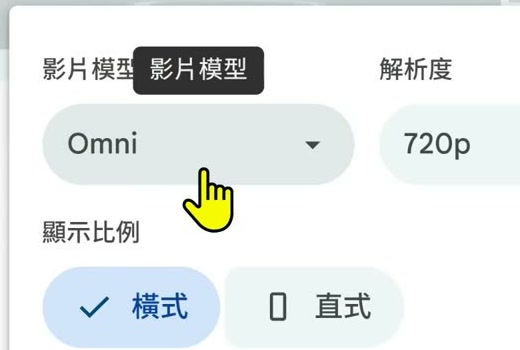
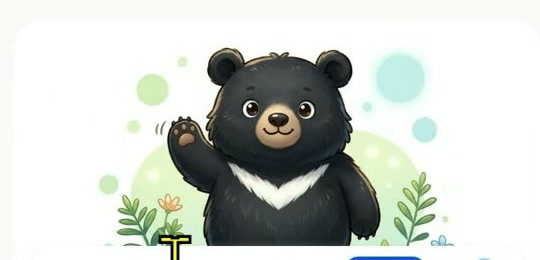
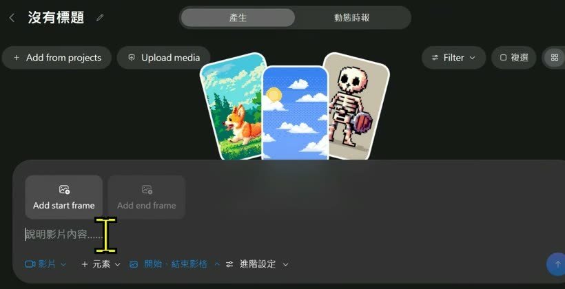

0. 課程資訊與教材
| 課程名稱 | EP57｜不只一句 Prompt！AI 影片生成 10 大控制術 |
|---|---|
| 直播日期 | 2026/11/07（六）上午，本段錄影全長 52 分 40 秒 |
| 本堂主題 | 角色參考、圖片生影片、首尾幀、片段延長、時間軸銜接、旁白字幕，以及用 AI 專案先整理故事與分鏡 |
| 現場案例 | 臺灣黑熊去河邊野餐、淡水土耳其冰淇淋換角色，以及可樂加曼陀珠的 30 秒科學短片 |
| 要先準備 | 可登入的 Google 帳號；若要跟著做，先準備一張角色圖與一個 8～15 秒內能說完的動作 |
📁 本次來源
來源資料夾包含一段錄影與一份 82 頁簡報。原始錄影與簡報不在公開頁提供下載；簡報用來核對工具名稱、十個控制面向與操作限制，並已另做一份依錄影時間軸整理的整合筆記。
| 教材 | 整理時的用途 |
|---|---|
EP57 課堂錄影 | 以現場操作與口述為主，記錄哪些功能真的打開、哪些流程成功、哪些地方仍需後製。 |
AI 影片生成 10 大控制術簡報 | 核對文生／圖生、首尾幀、七個影片零件、六個提示詞欄位、鏡頭語言與工具分工。 |
📥 帶走一份正式手冊
課堂筆記 PDF · 課堂筆記 Word · 簡報整合 PDF · 簡報整合 Word · 每 15 秒完整版 PDF · ZIP 筆記包
1. 一張圖看懂這堂
控制力不是把提示詞寫得更長，而是把製作拆成五個可檢查的決定。
2. 先決定輸入：文字用來發想，圖片用來鎖住畫面
前半段以 Google Vids 的臺灣黑熊案例示範：先選模型、解析度與比例，再用角色圖降低每一鏡重新猜角色的風險。


角色一致性不是一句「保持一致」就夠
- 身份先固定：臉型、毛色、服裝與配件要能從參考圖辨識。
- 角度要有資料：只有正面圖，模型換成側面或背面時就要重新猜。
- 每次只改一件事：角色不變，先換場景；場景不變，再測動作或鏡頭。
- 規格留在介面：比例、解析度與片長用設定控制，不必全部塞進提示詞。
3. 首尾幀不是魔法，中間只安排一件做得完的事
Flow 示範先給起點與終點，再用文字描述中間的 8 秒如何變化。兩端約束越清楚，中間越不必憑空猜。
| 控制項 | 你要先決定 | 常見失敗 |
|---|---|---|
| 首幀 | 角色、構圖、鏡位與動作起點 | 起點已經把動作做完，後面沒有可發展的空間 |
| 尾幀 | 同一角色的結束狀態與目標畫面 | 人物、物件大小或鏡頭角度差太遠 |
| 中間提示 | 一次主要動作、方向、速度與必要的鏡頭語言 | 在 8 秒內塞進多個事件，造成跳接與變形 |
- 先用兩張圖確認「誰、在哪裡、從什麼狀態到什麼狀態」。
- 把中間事件縮成一句可觀察的動作，例如角色與攤商交換位置。
- 生成後先看臉、手、物件與移動路徑，再判斷要不要拆成兩鏡。
4. 生成只是片段，銜接要回到時間軸
兩段都能播放，不代表接在一起就自然。課堂直接在時間軸上剪短、換接點、試轉場，再補旁白、配樂與字幕。

銜接時先看三個連續性
- 動作連續：上一鏡角色正拿著物件，下一鏡不能無預警回到空手。
- 方向連續：主體往畫面右側移動，下一鏡若反向，觀眾會覺得跳。
- 節奏連續：剪掉多餘停頓，再決定要硬切、疊化或換一個更自然的接點。
| 後製零件 | 放到後面做的理由 |
|---|---|
| 旁白 | 先讓畫面長度穩定，才知道句子要說多快、在哪裡停。 |
| 配樂 | 最後依旁白與畫面節奏調音量，不讓音樂蓋過資訊。 |
| 字幕 | 生成畫面中的文字容易錯；正確字詞與閱讀時間由剪輯階段控制。 |
5. 把控制項拆開，比一句 Prompt 更清楚
Meta AI 的一般聊天頁不是影片工作區；課堂改進入 Vibes，介面直接把首幀、尾幀、角色、樣式、場景與延伸拆成選項。

| 十個控制面向 | 實作時的問題 |
|---|---|
| 懂原理／選輸入 | 這一鏡要探索畫面，還是已經有定稿圖？ |
| 定起終／拆零件 | 首尾差多少？劇情、畫面、聲音、字幕與節奏要怎麼分工？ |
| 寫提示／先圖後影 | 畫面上能看見的主體、動作、場景、光線、風格與鏡頭是什麼？ |
| 接動作／鎖角色 | 中間只發生一件事嗎？身份參考是否沿用？ |
| 控鏡頭／選工具 | 景別、運鏡與慢動作是否混在一起？目前任務需要哪一類工具？ |
6. 先建故事母版，再轉成各工具吃得下的格式
可樂加曼陀珠案例先在 AI 專案裡完成 30 秒劇情、分鏡與畫面零件，再分支成 Google Vids 的短鏡提示、NotebookLM 的來源文字與其他工具的輸入。

一份母版，派生多種輸入
- 先寫一句主題與觀眾最後要記住的結論。
- 把 30 秒拆成鉤子、現象、解釋與結論，再細分成短鏡。
- 為每一鏡列角色、畫面、動作、旁白與片長。
- 依工具限制改寫：10 秒工具只拿一鏡；來源型工具拿完整文字與圖片。
- 生成後回到同一份分鏡表驗收，不讓不同工具各自改寫主線。
7. 工具不是越多越好，要按任務分工
後段快速帶過 Canva AI、Felo 與 Agent 型工作流；重點不是把每個網站都學完，而是知道什麼工作值得交給哪一類工具。
| 任務 | 適合的工具類型 | 你仍要驗收 |
|---|---|---|
| 快速發想與腳本 | ChatGPT、Gemini 等對話模型 | 主題、受眾、片長、事實與敘事節奏 |
| 角色與單鏡生成 | Vids、Flow、Vibes 或專業影片模型 | 角色一致、物件完整、動作與鏡頭 |
| 來源型摘要影片 | NotebookLM 等來源導向工具 | 來源是否正確、重點是否失真、畫面是否單調 |
| 精細產品與多角度展示 | 可調參數的 Agent／Skill／MCP 工作流 | 素材權利、每鏡規格、版本與輸出品質 |
| 成片與發布 | 時間軸剪輯、字幕與配音工具 | 錯字、音量、浮水印、比例與授權 |
公開前還有四條線
- 帳號與隱私：不要上傳同學照片、個資或受限素材；不同地區與年齡的服務限制要先查。
- 肖像與聲音：真人、歌手、聲音克隆與對嘴都需要權利基礎。
- 浮水印與商用：免費方案能生成，不代表可以移除浮水印或拿去商用。
- 標示與查核：需要時標示 AI 生成；科學原理、產品規格與字幕要由人確認。
8. 這堂課真正在教的事
一、提示詞不是唯一控制面板
模型、比例、片長、首尾幀、身份參考與時間軸都是控制。能在介面直接指定的規格，不必用形容詞繞一圈。
二、先降低每一鏡的自由度
角色先定稿、動作只留一個、鏡頭先固定，模型需要猜的事情越少，結果越容易比較與修正。
三、把長片拆成短鏡，失敗才有辦法定位
一支 30～45 秒的片先拆成 5～8 鏡。哪一鏡變臉、哪一鏡跳接、哪一句旁白太長，都能各自處理。
四、先有故事母版，再做工具轉譯
同一份劇情可以派生為影片提示、角色圖、NotebookLM 來源或剪輯表；不要讓每個工具各講一個不同故事。
五、生成完成只是進入後製
接點、字幕、聲音、權利與事實都不是模型替你決定的。導演的工作，是逐鏡驗收與整體取捨。
9. 老師金句
10. 資料來源與整理說明
| 來源 | 2026/11/07 課堂錄影單段，全長 52 分 40 秒；同課程簡報 82 頁。 |
|---|---|
| 整理方式 | 全程本機處理：89 張關鍵畫面候選、599 段逐字稿；正式頁人工精選並去識別 6 張截圖，再依主題重寫章節。 |
| 時間戳 | 章節 chip 與引文後方的［mm:ss］對應錄影播放器時間。 |
| 整理 | 竹貞（Tarshar 的逐幀筆記專員） |
已知限制，請先看過再引用
- 逐字稿是機器產生的，工具名與口語會聽錯。本頁以介面、簡報與上下文可確認的名稱校正；不確定的口述沒有補成事實。
- 影片中有靜音與重複辨識片段，整理時已壓縮或捨棄，不會出現在正式頁。
- 工具方案、點數、模型、年齡限制與可用地區會變動；本頁記錄的是課堂當下，不是價格承諾。
- 公開截圖已裁掉會議參與者、帳號、網址列、書籤列、工作列與非必要專案資訊。
- 原始錄影與簡報不公開；本頁不宣稱已取得原作者的公開授權。
- 教材與課堂畫面版權屬原作者。若原作者或課程方希望撤下，請透過聯絡頁告知，將即刻移除。